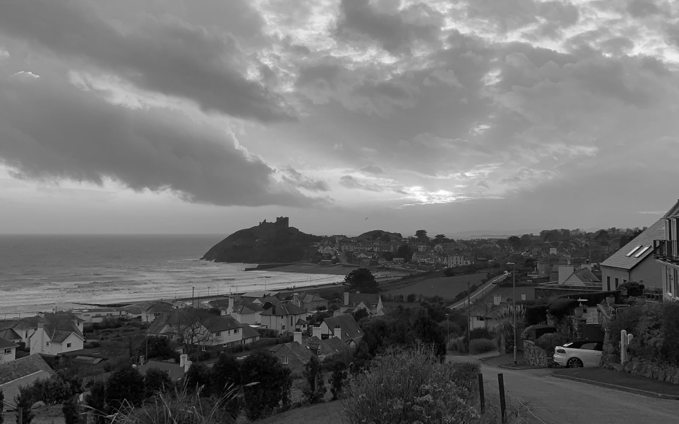
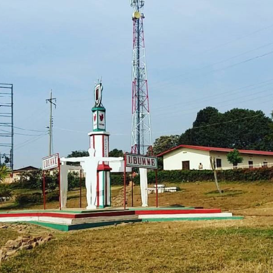

From Homeland to Homeland
An epic journey from Kentucky to Burundi via Wales and Ukraine
Get to know the places your online colleagues come from a little better
Every human being is an artist, a being of freedom, called to participate in transforming and reforming the conditions, thinking, and structures that shape and influence our lives.
The city of Practicum has brought together professionals from different corners of the world. Today, the Practicum Art Gallery is proud to present stories and photographs of some of the people who dedicate their time and effort to making the city’s future tech professionals feel at home. Each of us has a unique story about the place we come from. Feel free to add your own story and a visual artwork dedicated to your hometown to our collection. No matter where you're from, we’re glad you’re our neighbor.


-
Kyiv, Ukraine
Artist
Natalia Dolgushina, content producer
 Buy this artwork as an NFT
Buy this artwork as an NFTKyiv, the capital of Ukraine, is a large city located on the banks of the Dnipro River. Of course, no sane person would swim in the river—unless they grew up here, in which case they’ve probably tried it at some point. Summers are hot here, and winters are windy, but fall and spring are absolutely amazing.
The city itself is a mix of pre-revolutionary, post-war, and Soviet architecture, all peppered with modified balconies. If you're on the right bank of the Dnipro, the terrain is hard to navigate by bike or in heels. However, the left bank is considered far less interesting and prestigious—even by people who live on the outskirts of the right bank.
-
Criccieth, Wales
Artists
Steffan Warren, senior editor
Kseniya Glagoleva, project manager
 Buy this artwork as an NFT
Buy this artwork as an NFTThe medieval ruin of Criccieth Castle overlooks the town from a rock jutting into the sea. It is believed to have been built by Llewelyn the Great in the 13th century. Some 900 years later, the self-proclaimed *Pearl of Wales on the Shores of Snowdonia* has become a popular tourist destination in the summer months.
A short walk from the castle, you can enjoy the world’s best ice cream at Cadwalader’s, whose secret ingredient is rumored to be local seaweed. Another claim to fame is that Criccieth won the *Wales in Bloom* award for five years in a row for its spectacular floral displays throughout the town. It was also home to David Lloyd George, the only Welshman to serve as the UK’s Prime Minister.
-
Berea, United States
Artist
Travis Turner, writer and editor
 Buy this artwork as an NFT
Buy this artwork as an NFTBerea is a small town located in central Kentucky. The town is surrounded by beautiful forests and fields. It is known as the state’s arts and crafts capital, and visitors will find plenty of shopping opportunities: handmade jewelry, candles, wooden items, galleries, glass studios, and more. The town holds an annual festival celebrating “spoonbread,” a local dish made of cornbread and served with a wooden spoon.
However, it is perhaps best known for Berea College, founded in 1855 as the first racially integrated and coeducational college in the southern United States. Uniquely, it does not charge tuition—all students receive a full-tuition scholarship.
-
Muramvya, Burundi
Artist
Grevisse Kenguruka, technical editor
Buy this artwork as an NFTMuramvya is one of the 18 provinces of Burundi. During the era of the kingdom, Muramvya was the royal capital, and in 2007, it was added to the UNESCO World Heritage Tentative List for its culture and natural landscape. It is located in central Burundi, between the country’s political and economic capitals.
The climate is rather cold at night, but during the day, you’ll feel like you’re in paradise. At 2,665 meters above sea level, Mount Teza is one of the coldest places in the province. But that cool breeze supports one of the country’s largest tea and coffee plantations, which make up the majority of Burundi’s exports.
Kibira National Park, one of the largest wildlife reserves for apes, spans four provinces including Muramvya. This national park lies at the crest of the beautiful Congo-Nile divide mountains, ranging from 1,550 to 2,660 meters in elevation. It is filled with lush vegetation and is a source for the many rivers and streams that supply water throughout the country.